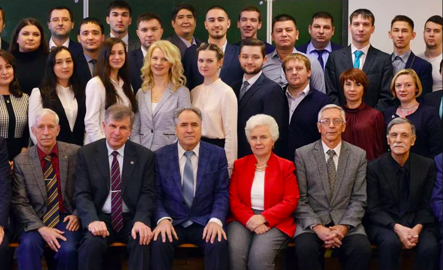

Кафедра транспорта и хранения нефти и газа УГНТУ
В 1949 году на нефтетехнологическом факультете УНИ открыта специальность «Транспорт и хранение нефти».
В 1950 году специальность передана на горно-нефтяной факультет.
В 1952 году организован нефтемеханический факультет.
В сентябре 1952 года на нефтемеханическом факультете УНИ была организована кафедра «Транспорт и хранение нефти и газа», в задачу которой входила подготовка специалистов по данному профилю.
В 1953 году на кафедру принят первый штатный доцент – И.Ф. Пономарев.
В 1952 году первым заведующим кафедрой был избран кандидат технических наук Виктор Евдокимович Губин (ректор УНИ в 1954-1964 гг.).
В 1954 году первый выпуск специалистов кафедры составил 46 человек.
В 1957 году в аспирантуру по специальности «Транспорт и хранение нефти и газа» зачислены первые аспиранты – Г.З. Закиров и К.Д. Фролов.
В 1958 году на должность заведующего кафедры был избран доктор технических наук, профессор Всеволод Сергеевич Яблонский.
В 1960 году была организована Отраслевая лаборатория трубопроводного транспорта Главнефтеснаба РСФСР, благодаря которой изменился количественный и качественный состав научного и учебно-вспомогательного персонала кафедры, резко возросла эффективность его работы и заинтересованность в ее результатах.
В 1962 году кафедра из здания по ул. Ульяновых, 45 переехала в новый учебный корпус № 1 по ул. Космонавтов, 1.
В 1963 году кафедру возглавил профессор Виктор Федорович Новоселов.
В 1970 году кафедра разместилась в новом учебном корпусе №2.
В 1972 году В. Ф. Новоселов стал первым соискателем ученой степени, защитившим докторскую диссертацию в УНИ.
В 1993 году кафедру возглавил профессор, доктор технических наук Айрат Мингазович Шаммазов.
В период с 1994 по 1997 гг. исполняющим обязанности заведующего был назначен кандидат технических наук, доцент Геннадий Евгеньевич Коробков.
Освоившись с обязанностями ректора, в 1997 году Айрат Мингазович вновь избирается на должность заведующего кафедрой ТХНГ.
В 2007 году профессора кафедры А.М. Шаммазов и Б.Н. Мастобаев стали Лауреатами Премии Правительства РФ в области образования.
В 2011 году профессора. кафедры А. М. Шаммазов и Б.Н.Мастобаев стали Лауреатами Премии Правительства РФ в области образования во второй раз.
Текущей работой кафедры до 2014 года занимался зам. заведующего кафедрой доктор технических наук, профессор Г.Е. Коробков.
С 1 сентября 2014 года заведующим кафедрой "Транспорт и хранение нефти и газа" избирается профессор, доктор технических наук Мастобаев Борис Николаевич.
Заместителем заведующего кафедрой назначается доктор технических наук, профессор Гареев Мурсалим Мухутдинович, имеющий богатый производственный опыт в области трубопроводного транспорта нефти.
В настоящее время на кафедре «Транспорт и хранение нефти и газа» (ТХНГ) работают 40 преподавателей (10 докторов наук, профессоров, 15 кандидатов наук, доцентов), ассистенты, учебные инженеры, мастера, и аспиранты. Примечательно то, что коллектив кафедры полностью состоит из выпускников УНИ-УГНТУ. Активно ведется научная и учебно-методическая работа. Кафедра активно сотрудничает с зарубежными предприятиями и учебными заведениями, среди которых можно выделить: Горный Университет (Леобен, Австрия), Технический университет (Мишкольц, Венгрия), СП «Вьетсовпетро», Компания MEGA(Чехия) и др.
На кафедре подготовлено более 5500 специалистов, защищено более 50 кандидатских и 10 докторских диссертаций.
